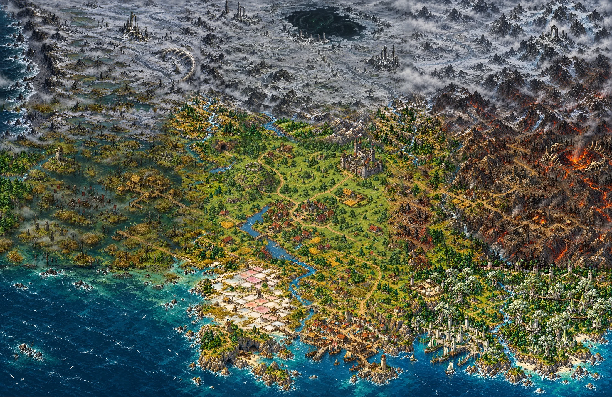

The realm is whole
he map of Aldemere is now whole. Seven painted tiles make the land, laid out like a quilt: the Greywood in the middle, the Fenmarch to the west, the Ashfang Peaks to the east, Saltreach on the southern coast, and a strip of cold country across the top that I call the Pale North.

The problem with tiles
Each tile was painted on its own, so every edge ended where the picture happened to end. Put two of them side by side and you could see the seam: a straight line where a forest hit a marsh, where a river changed width, where black mountains met brown ones. On a map you scroll across all day, that line is hard to ignore.
What did not work
My first fix was a band of mist laid over each join. It hid the line and looked like a scar. I took it out. A second try mirrored the ground on one side to continue the other, and it looked like a reflection in a pond. Out as well.
What worked
For each join I made a guide: finished art on both sides and a plain grey band in the middle, then had only the band painted. I cut that band back into the two tiles and blended it over a few dozen pixels. Everything outside it stays exactly as it was, so the buildings, the towers and the mill are untouched.
A few of the renders changed things they should not have, so I protected the places that matter. The cave, Crownhall, the tower in the reeds, the stilt village and the crater are checked pixel for pixel against the originals. Where a render wanted to redraw one, the original won.
The far north
The Pale North is three tiles wide: a coast, a frozen waste and a mountain wall that cools the Ashfang Peaks into snow. It is barren, empty and wrong in ways I will not explain yet. It opens in the last act.
Two blank patches remained on the map when I wrote this. They are painted now: see The last two tiles.